Topologias, Tipos e Estruturas Lógicas
"Rede é um conjunto de dispositivos..."
...interligados para compartilhamento de recursos, informações e serviços.
Uma rede de computadores é um sistema de interconexão de computadores autônomos, através de meios físicos e protocolos, com o objetivo de compartilhar informações e recursos.
— Jeanine dos S. Barreto et al.
Fundamentos de Redes de Computadores. Grupo A - Minha Biblioteca, 2018
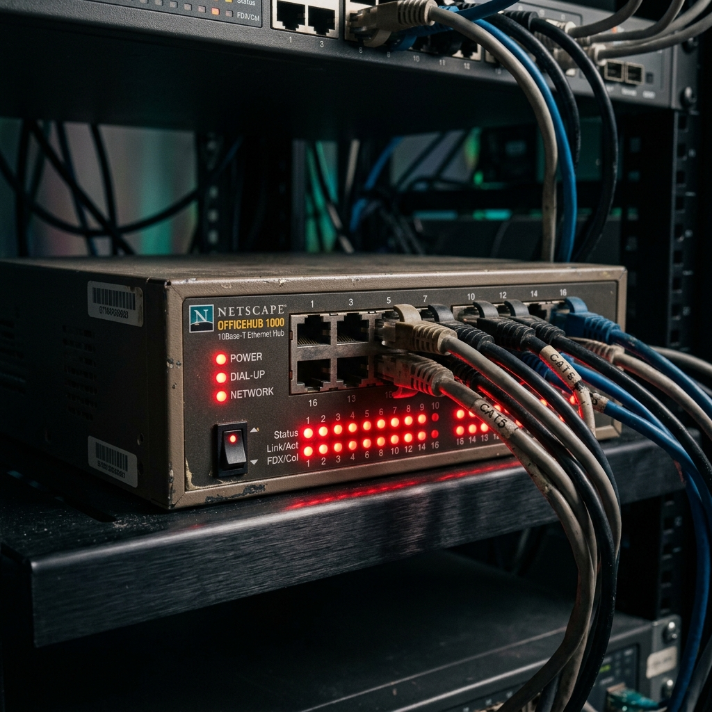
O Repetidor Cego
O equipamento mais básico. Ele recebe a informação e simplesmente "grita" para todos (Broadcast). Gera tráfego inútil e colisões. Obsoleto hoje em dia.
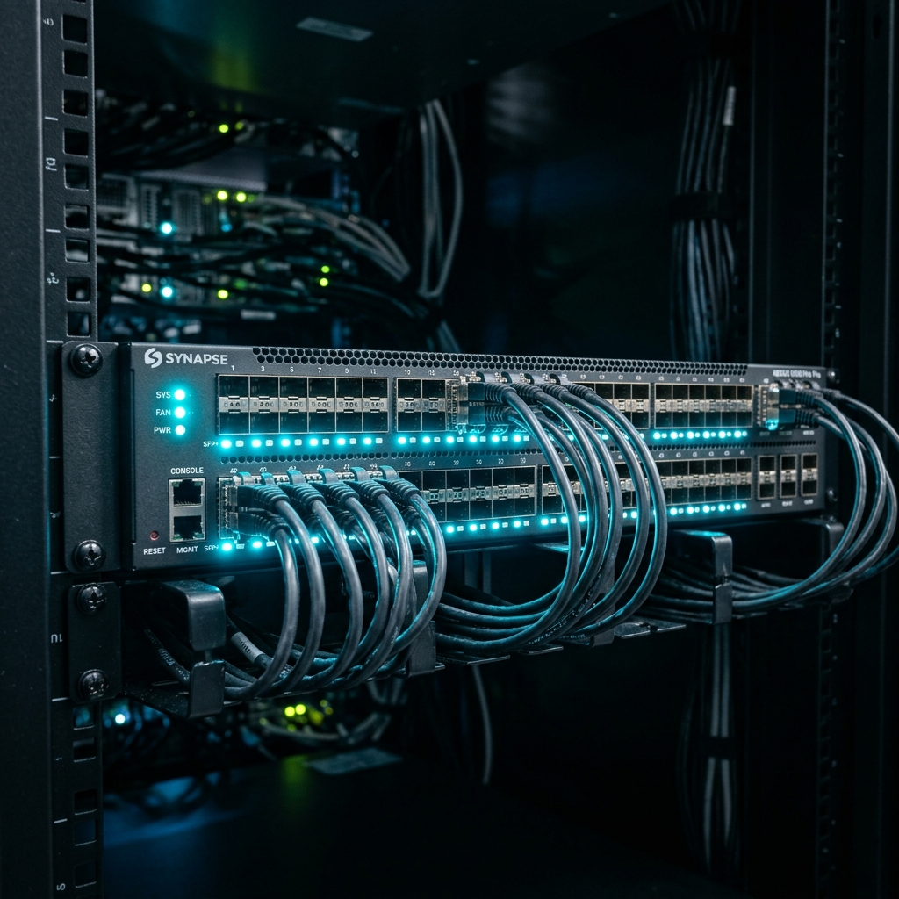
O Entregador Direto
Inteligente! Aprende o endereço de hardware (MAC) de cada PC e manda os dados direto para o destino exato. Base das LANs modernas.
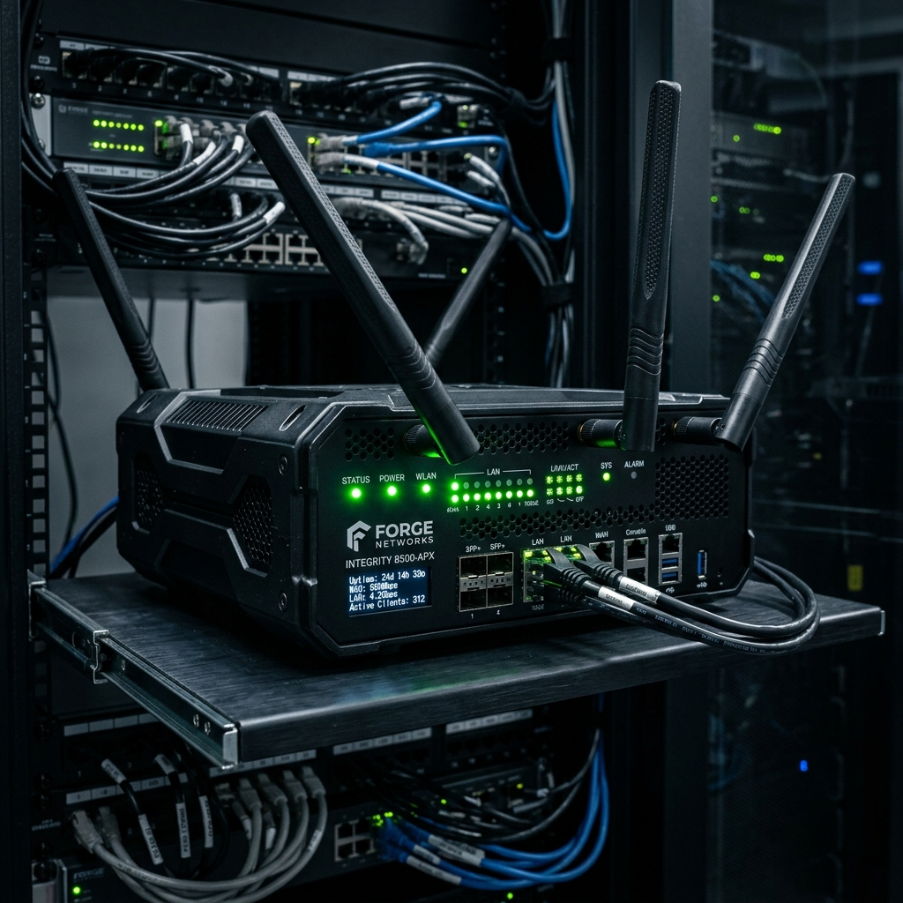
O Mestre das Rotas
Interliga redes diferentes (sua casa com a Internet). Ele traça a melhor rota para o pacote chegar ao destino via IP.
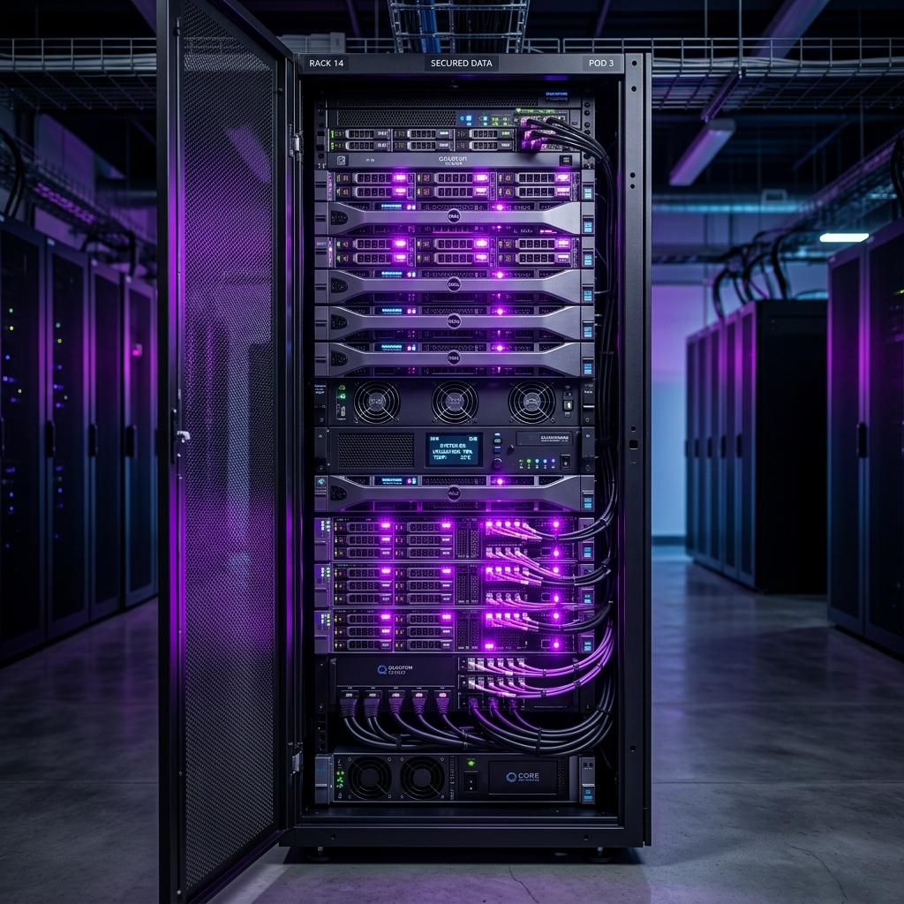
O Provedor de Recursos
Máquina potente que "serve" recursos centralizados: páginas Web, e-mails, arquivos e o serviço de distribuição de IPs (DHCP).
Sem Fio
A Ponte Invisível
O Ponto de Acesso (AP) converte o sinal da rede cabeada em ondas de rádio (Wi-Fi). Ele permite que dezenas de dispositivos móveis se conectem à rede local simultaneamente, sem a necessidade de cabos.
Guardião
A Muralha de Proteção
Equipamento (ou software) responsável por filtrar o que entra e o que sai da rede. Ele bloqueia acessos não autorizados e protege os dispositivos internos contra ataques cibernéticos externos.
End Devices
A Razão da Rede Existir
São os equipamentos utilizados diretamente pelos usuários ou que geram dados para a rede. Inclui Computadores (Desktop), Notebooks, Celulares e Câmeras de Segurança IP. Eles são o destino e a origem de todo o tráfego.
Estação
A Força de Trabalho
As estações de trabalho tradicionais. Costumam estar ligadas à rede via cabo (Ethernet) para garantir a máxima estabilidade, segurança e performance, especialmente em ambientes corporativos e laboratórios.
Mobilidade
O Poder Portátil
Trazem o poder de processamento do Desktop, mas com foco total na mobilidade. Conectam-se predominantemente via Wi-Fi nas empresas modernas e ditam as novas regras de espaços de trabalho dinâmicos.
Ubíquo
A Maioria Esmagadora
O dispositivo final mais numeroso do mundo. Eles sobrecarregam as redes sem fio com um intenso consumo de banda (redes sociais e vídeos), exigindo infraestruturas Wi-Fi extremamente robustas.
Uplink
O Olho da Rede
Diferente de um celular que consome dados, a Câmera IP gera tráfego enviando um fluxo pesado e ininterrupto de vídeo (uplink). Devido ao peso do streaming, elas frequentemente exigem redes isoladas (VLANs).
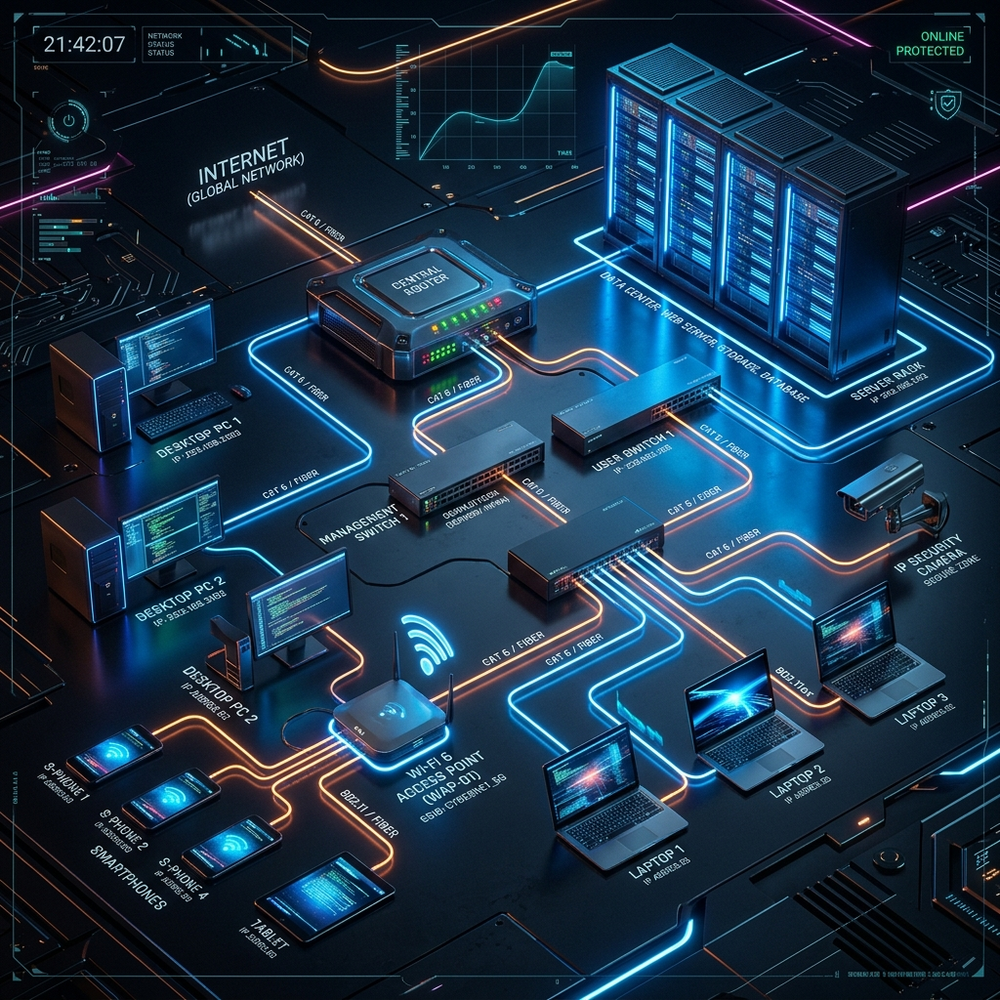
A Rede Pessoal
Redes de curtíssimo alcance. Utilizada para comunicação entre dispositivos pessoais ao redor de um indivíduo, como Bluetooth, fones de ouvido e Wearables (Smartwatches).
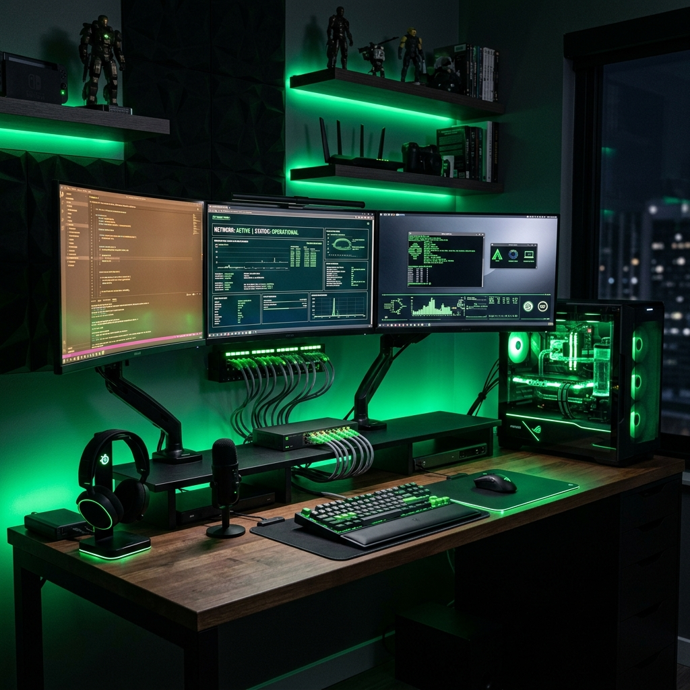
A Rede Local
A infraestrutura base das empresas, salas de aula e residências. Abrange distâncias curtas (como um prédio ou andar) unindo computadores para compartilhamento rápido e local de recursos.
🏠 Uso Residencial
A rede Wi-Fi da sua casa, conectando seu notebook, smartphone e impressora.
🏢 Uso Empresarial
A rede de computadores em um escritório ou em um andar de um prédio.
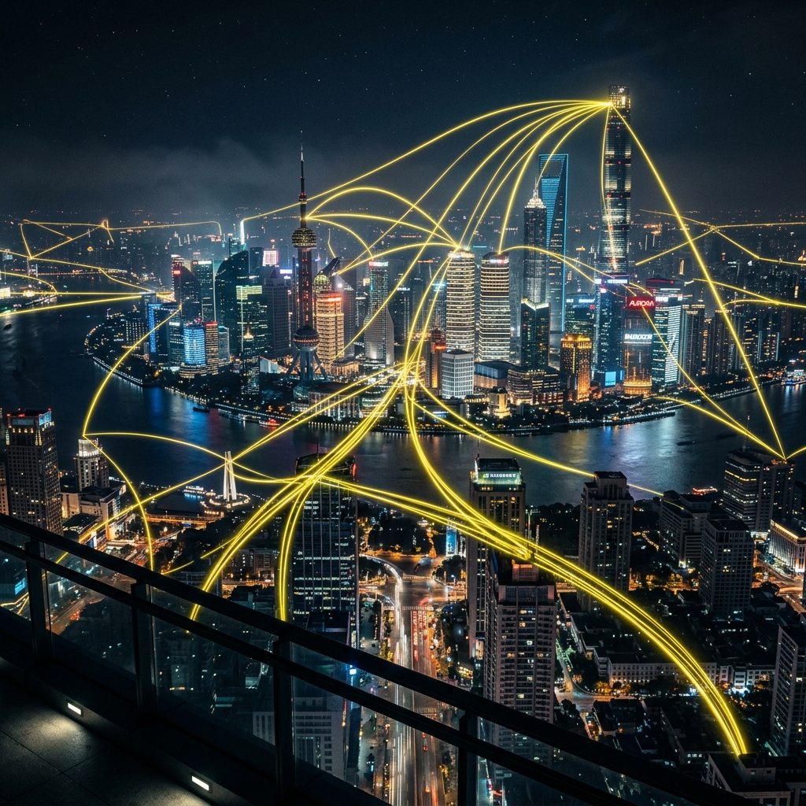
A Rede Metropolitana
Interliga diversas LANs dentro do perímetro de uma cidade, campus universitário gigante ou região metropolitana. Geralmente construída com anéis de fibra óptica.
🏙️ Provedores de Bairro (ISPs)
O provedor local que espalha fibra óptica pelos postes para conectar centenas de clientes de um bairro ou cidade inteira.
🏢 Interligação de Filiais
Uma grande empresa que paga um link de fibra dedicado para ligar a matriz (no centro) à sua filial (em outro bairro) como se fosse uma só rede.
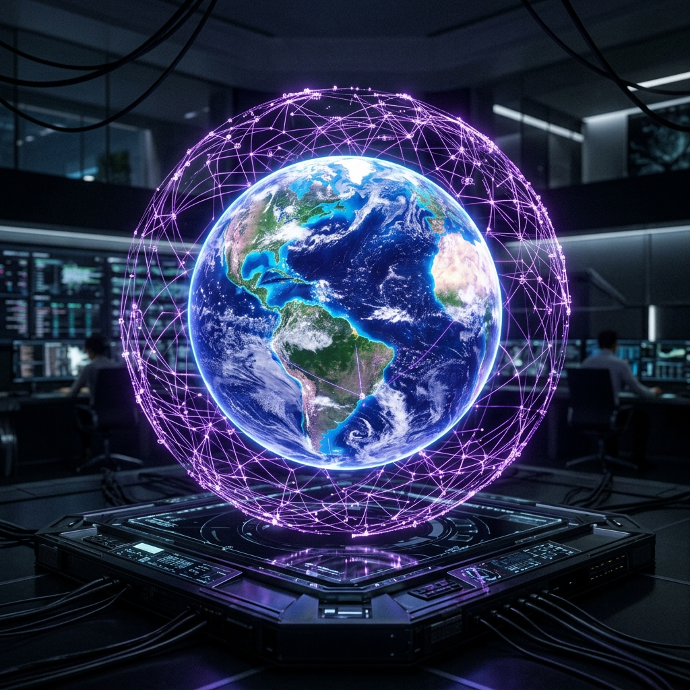
A Conexão Global
Redes de longa distância (países e continentes). A Internet é o maior exemplo de WAN do mundo. Ela une todas as outras redes através de cabos submarinos e satélites.
🌐 A Própria Internet
A maior WAN pública do mundo. Ela une todas as redes locais do planeta (a rede da sua casa e os servidores da Netflix) através de uma teia gigantesca de cabos submarinos.
📡 Conexões via Satélite (Starlink)
Uma infraestrutura de WAN espacial que cobre distâncias massivas conectando locais extremamente isolados e fazendas ao backbone global de dados.
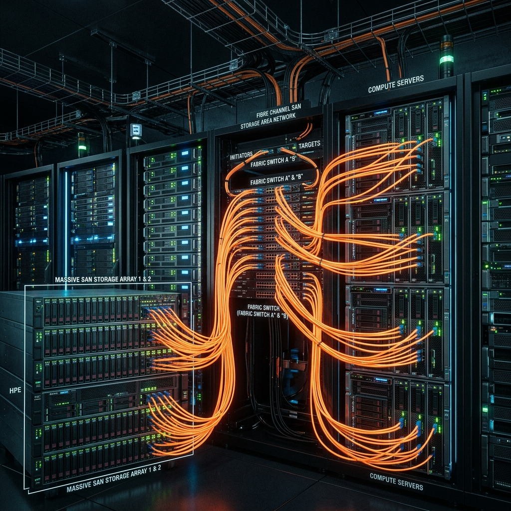
A Rede de Armazenamento
Uma rede isolada e dedicada exclusivamente para armazenar dados e fazer a comunicação em altíssima velocidade entre os servidores de processamento e os discos de armazenamento.
🎬 Estúdio de Vídeo
Vários computadores de edição super potentes acessando simultaneamente os mesmos arquivos de vídeo bruto de um servidor central, sem travar a rede da empresa.
🏥 Bancos e Hospitais
Bancos de dados gigantes (históricos de pacientes ou transações financeiras) guardados em data centers conectados via fibra óptica puramente para armazenamento.
A Divisão Lógica
Reúne diversas máquinas de forma LÓGICA e não física. Permite fatiar um único switch em várias redes independentes e isoladas, como se fossem equipamentos separados.
🏢 Separação de Departamentos
Separar a rede do setor Financeiro da rede do Marketing. Um não enxerga os computadores e dados do outro, mesmo estando plugados no mesmo switch físico.
🤝 Rede para Convidados (Guest)
Criar um Wi-Fi exclusivo para visitantes na empresa. Essa rede dá acesso à internet, mas fica virtualmente isolada dos servidores e arquivos internos, garantindo segurança total.
Todos São Iguais
Não há um chefe central na rede. Todos fornecem e consomem recursos. É muito fácil e barato de montar, mas vira um caos absoluto para administrar caso a rede cresça demais.
Workgroup
O Escritório sem Servidor
Imagine um escritório pequeno. A secretária compartilha a impressora USB na rede. O financeiro compartilha uma pasta. Se a secretária for embora e desligar o PC, ninguém mais imprime. Cada um cuida da sua própria senha e segurança local.
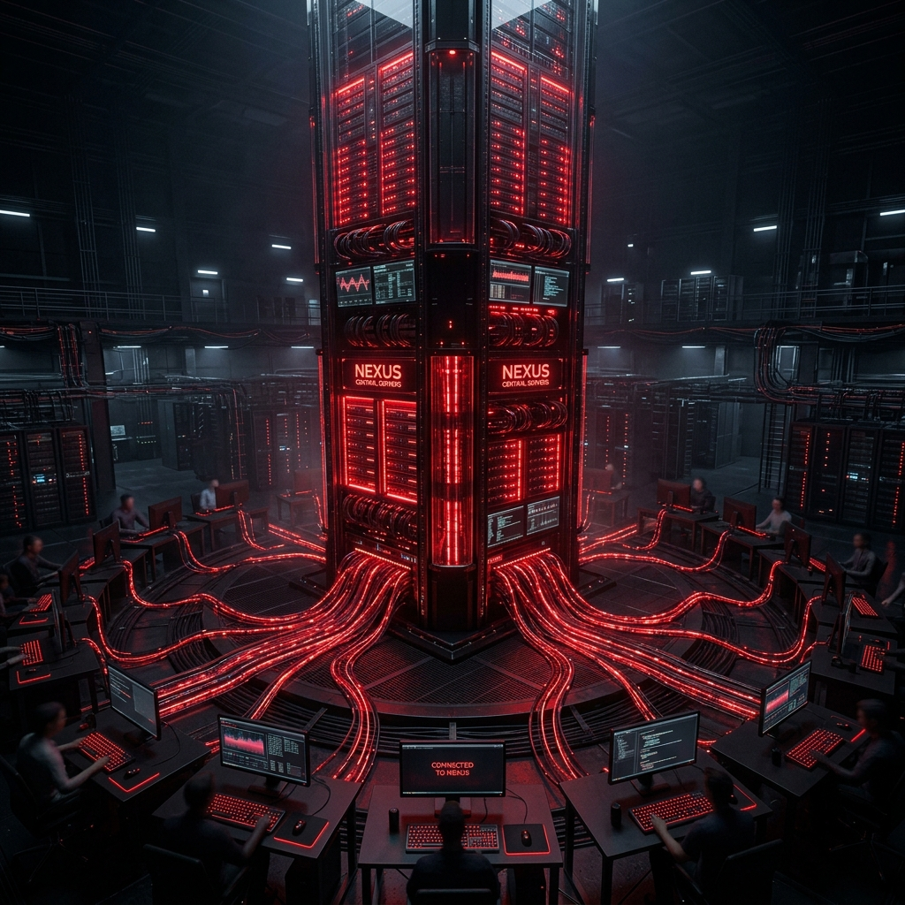
O Controle Centralizado
Um chefe (Servidor) controla todos os recursos. É altamente seguro, organizado e escalável. O único problema: se o servidor cair, ninguém acessa os dados.
Centralizado
Bancos e Streaming
• Caixa Eletrônico: A máquina (Cliente) pergunta se você tem saldo. O Servidor Central aprova e manda a ordem pra soltar a nota.
• Netflix: A sua Smart TV (Cliente) pede um filme. Os Datacenters (Servidores) calculam a qualidade e entregam o vídeo.
Se o Servidor do Banco cair, nenhum caixa eletrônico do país saca um único centavo. A inteligência nunca está no Cliente!
O Ponto Central
Todos os dispositivos são conectados a um centralizador (Switch). Vantagem: se um cabo quebrar, apenas aquela máquina cai. Desvantagem: se o Switch queimar, a rede inteira para.
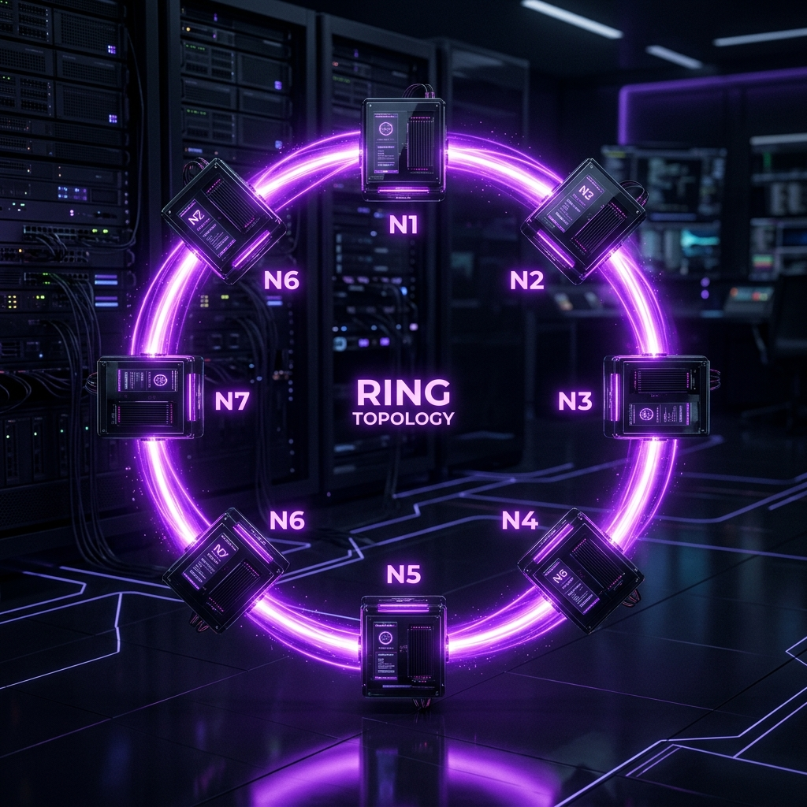
O Círculo Fechado
Os dados trafegam em círculo (Token Ring). Quase não há colisões, mas é perigoso: se um nó ou cabo falhar no meio do caminho, a rede inteira pode ser interrompida.
A Linha Única
Todas as máquinas compartilham o mesmo cabo central. É extremamente barato de montar, porém ultrapassado por gerar excessivas colisões de dados e lentidão massiva.
Full Mesh
A Teia Imparável
Todos os nós estão interconectados a todos os outros. É a topologia mais resiliente: se um caminho cair, existem dezenas de alternativas. O problema: é caríssima e fisicamente complexa.
A Base da Internet
A fusão de Estrela e Barramento. Ela organiza a rede em hierarquia (Core, Distribuição, Acesso). É o padrão oficial de grandes empresas e da própria Internet. Permite expansão em massa mantendo o controle.
Toda essa engenharia é extremamente frágil.
Vocês acabaram de ver que a internet global (WAN) e os serviços que usamos hoje (Cliente-Servidor) repousam totalmente sobre cabos físicos e energia elétrica. E tudo isso tem um ponto único de falha.
"Se a infraestrutura global cair amanhã, o que do seu mundo continuará funcionando? Como os conceitos físicos que vimos hoje (Ponto a Ponto e Malha Local) poderão salvar a nossa comunicação no projeto O Mundo Sem Internet?"
Servidor de Conhecimento Offline
Missão de Hoje (Pergunta-Chave):
"Como a arquitetura Cliente-Servidor pode ser reconstruída localmente (LAN) para que nossa comunidade consiga acessar a Wikipédia sem depender da Internet (WAN)?"
Equipe Responsável
Comunicação Resiliente
Missão de Hoje (Pergunta-Chave):
"Se a infraestrutura global de roteamento cair, como usar conexões Ponto a Ponto (P2P) entre dispositivos para garantir que a mensagem chegue ao destino?"
Equipe Responsável
Redes Mesh e Bitchat
Missão de Hoje (Pergunta-Chave):
"Como a Topologia em Malha (Mesh) sem Switches centrais pode criar uma rede comunitária invencível quando todos os ISPs estiverem fora do ar?"
Equipe Responsável
Sincronização Assíncrona de Dados
Missão de Hoje (Pergunta-Chave):
"Em uma rede fragmentada (várias PANs e LANs isoladas), como garantir que pequenos Servidores consigam atualizar dados assim que um link de conexão temporário surgir?"
Equipe Responsável
Transações Offline
Missão de Hoje (Pergunta-Chave):
"Sem os grandes bancos na WAN para validar pagamentos, como as transações P2P (Ponto a Ponto) com criptografia local podem criar confiança entre os hosts?"
Equipe Responsável
Agentes de IA Locais e Off-Grid
Missão de Hoje (Pergunta-Chave):
"Como um servidor de Inteligência Artificial isolado (Host Off-Grid) pode substituir serviços de nuvem na tomada de decisões sem depender de conexões externas?"
Equipe Responsável
Dê os primeiros passos como engenheiro de redes: instale, explore, crie e simule suas conexões — diretamente no Packet Tracer.
Objetivos Principais: